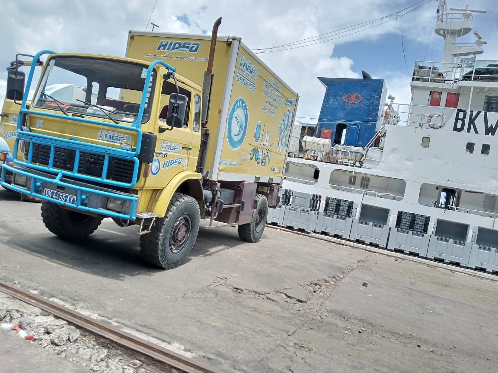

Dédouanement import-export
Déclarations en douane, régimes économiques et liquidation des droits.

Dédouanement, consignation, formalités : NGF Transit est votre interlocuteur unique au Port de Dakar, une connaissance intime de chaque étape de la chaîne portuaire.
Un seul contact pour toutes vos formalités administratives et douanières.
Des équipes disponibles au rythme des navires, pas des bureaux.
Implantés au Môle 10, au cœur du Port de Dakar depuis 1989.
Le passage portuaire d'une marchandise est une course d'obstacles réglementaires. NGF Transit la transforme en formalité : nos déclarants et agents connaissent chaque guichet, chaque document, chaque délai du Port de Dakar.
Adossée au Groupe NGF et à ses 35 ans de présence portuaire, la filiale accompagne armateurs, importateurs et exportateurs, de la pêche industrielle au commerce général.

Six services pour fluidifier le passage de vos marchandises et de vos navires.
Déclarations en douane, régimes économiques et liquidation des droits.
Représentation des navires et coordination complète des escales.
Manifestes, connaissements et certificats gérés sans erreur.
Un point d'avancement clair sur chaque dossier, en temps réel.
Anticiper les évolutions douanières pour éviter les blocages.
Liaison avec manutentionnaires, transporteurs et entrepôts.
Confiez-nous votre dossier : nous vous répondons avec un délai et un coût précis.